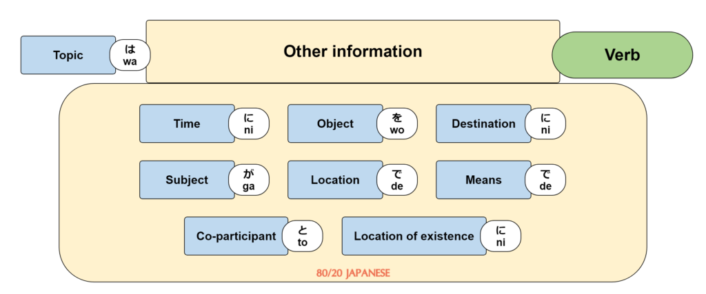
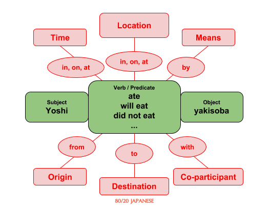
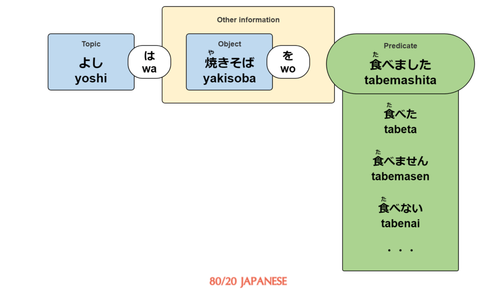

“Desu” is one of the first words that most Japanese language students encounter, yet it is also one of the most misunderstood.
Far too many people are mistakenly led to believe that it just makes a sentence polite, and although that is effectively all it does in some cases, it is so much more than that.
In this article, I will cover it all – from the simple, beginner-level uses of “desu” in polite sentences, to all the various forms it takes and the deeper reasoning behind why “desu” seems to be completely inconsistent with everything else in Japanese grammar.
Contents
- What “Desu” Means – The Simple Answer
- Where “Desu” Fits Into the Overall picture
- Japanese Predicates
- Adding ‘Other Information’
- Key Takeaways
What “Desu” Means – The Simple Answer
“Desu” is the polite form of the copula verb meaning “to be” or “is”. It is the verb used to describe two things as being equal, that is, X = Y. Typically, this will be done using the pattern:
It is easy to think that “wa” means “is” or “equals” here, but it doesn’t. “Wa” plays a different role, as we’ll see below.
Here’s a real example following the above pattern:
Today is Monday.
kyō wa getsuyōbi desu.
きょう は げつようび です。
今日は月曜日です。
In this sentence, we have three parts:
- The topic, “kyō”, marked by the particle “wa”. This simply tells us we are talking about “today”.
- “Getsuyōbi”, meaning “Monday”
- “Desu”, which tells us that the thing before it – “getsuyōbi” – is “equal” to the topic, “kyō”
We could better approximate this sentence in English as:
Speaking of today, Monday is.
What “Wa” Means (Hint: It’s not “is”)
As I mentioned, it is easy to fall into the trap of thinking that the particle “wa” is what tells us that today is equal to Monday. It’s not.
In this sentence, as always, “wa” simply tells us what we are talking about for this sentence. In this case, that is “today”, so everything we say after “wa” is in relation to today (read about the difference between “wa” an “ga” here). So, in essence:
Kyō wa = (About) today
For comparison, here’s another sentence starting with this that doesn’t end in “desu”:
(About) today, it will rain (literally “rain will fall”)
kyō wa ame ga furimasu
きょう は あめ が ふります。
今日は雨が降ります。
You can see here that “wa” does not mean “is”. It simply tells us what we are going to be talking about for the rest of the sentence. Remember this well, because it is always true.
So, in our “desu” sentence, what follows “wa” is: getsuyōbi desu
- Getsuyōbi = Monday
- Desu = is
Combine everything and we get:
kyō wa getsuyōbi desu = About today, is Monday
Or, in more natural English, Today is Monday.
Remember, our general sentence pattern again for simple X = Y sentences is:
X wa Y desu
An important point to understand here is, what can X and Y be?
Basically, X will always be a noun, while Y can be either a noun or an adjective. This includes simple nouns and adjectives, as well as more complex elements like complex noun phrases or negative and past-tense adjectives.
Here’s an example where Y is an adjective:
Sushi is delicious.
sushi wa oishī desu
すし は おいしい です。
すしはおいしいです。
The same logic applies here as earlier.
A Deeper Understanding
What we have covered so far is enough to understand and use “desu” in simple sentences.
Unfortunately, however, if we try to take this simple approach much further, our understanding of “desu” can become a bit questionable. This is because the informal equivalent of “desu” takes different forms depending on the situation, including, in some cases, no form at all!
To truly understand “desu”, we need to take a close look at what role it plays in different situations.
Understanding the role of “desu” will make it much easier to determine when we should (and shouldn’t) use it, and in what form.
Perhaps more importantly, a proper understanding of “desu” will also give us a more complete picture of Japanese grammar and sentence structure as a whole.
For the remainder of this article, I’m going to explore in depth the practical uses of “desu” and its underlying purpose in different situations. By the end, you should have a fairly clear understanding of what “desu” is, when you should use it, and, perhaps most importantly, how it fits into the overall Japanese grammar system.
Where “desu” fits into the overall picture
To really understand what “desu” is, it will help a lot if we first have a clear idea of how Japanese sentences of all types are structured. To use a bad analogy, a car is much more useful if we have proper roads to drive it on.
Let’s start by looking at the sentence structure model that we’ll be squeezing “desu” into:

If you haven’t seen this before, I highly recommend reading my article on Japanese sentence structure first before continuing.
The green “Verb” section is labelled as such because most of the time, in simple sentences where the verb is not “desu”, that is all that goes there – a verb.
The truth is, however, that it would be more accurate to label the green section as the “predicate”, like so:

What’s a predicate, you ask?
It’s a scary sounding term, but it’s not too difficult to understand on a basic level, and it will help us tremendously in understanding what “desu” does, and how it compares to other verbs.
From Wikipedia*:
The predicate of a sentence mostly corresponds to the main verb and any auxiliaries that accompany the main verb.
(*There are actually competing definitions of the predicate, but this one from modern linguistic theory is what I’ll be using.)
In other words, in most cases, it’s just the main verb of the sentence, but sometimes this verb has a couple of other things attached to it.
Let’s look at a simple example in English:
Yoshi ate yakisoba.
Here, the main verb is “ate”, and the predicate is also “ate”. Now, here are a few similar sentences that have a different, more complex predicate. The predicates are in bold:
Yoshi did not eat yakisoba.
Yoshi is eating yakisoba.
Yoshi should eat yakisoba.
Yoshi will be eating yakisoba.
Notice that everything other than the predicate is exactly the same in each of these sentences, while the predicate itself varies considerably. Words like “did” and “not” are examples of the auxiliaries to the main verb that Wikipedia’s definition of the predicate is referring to.
Japanese predicates
In Japanese, the concept of the predicate is essentially the same, but the types of predicates that exist are different to English.
For simple sentences with a single verb, the predicate is just the main verb, the same as we saw in English:
Yoshi ate yakisoba.
yoshi wa yakisoba wo tabemashita.
よし は やきそば を たべました。
よしは焼きそばを食べました。
Since the verb is the predicate, we can put this into our diagram and use either title to label the green section:
For simple sentences like this, the “Verb” label makes sense because it is obviously much easier to understand (while still being accurate).
However, Japanese has other predicate forms where the “verb” label doesn’t really make sense. Here are the four types of predicates in Japanese:
- Verbs (not including “desu”, the copula verb – to be explained shortly)
- Noun + copula verb (desu)
- I-adjectives
- Na-adjectives
We could incorporate these into our diagram like this:

This is fundamentally different from English, which as we know only has predicates made up of verbs plus any extra bits like “not” and “will”. Here’s an example:

(Again, for more about this concept, check out my sentence structure article.)
In both languages, complete sentences must contain a predicate. In Japanese, that’s actually all they need, while English sentences have a couple of additional requirements, which we won’t go into.
This explains why Japanese people will say things like “oishī!” (delicious) or “kawaī!” (cute), where in English we would normally add other words in order to form a complete sentence, such as “That is so cute!”.
In Japanese, these adjectives on their own are predicates – that is, “verb phrases” that alone are enough to form a complete sentence. This is not true in English, hence the need for additional words like “that is”. Adding words like this in Japanese, however, would generally be redundant.
These additional predicate forms are also why “desu” might seem confusing and inconsistent. Apart from pure verb predicates, “desu” is necessary in all three of the other predicate types when using polite Japanese – the same three types that do not exist in English.
So, if we want to truly understand “desu”, it is actually quite simple – we know that the green part of our diagram is where the predicate goes:

Now we just need to understand how “desu” fits into each of the different predicate forms. Let’s look at those now, starting with the one we are already familiar with.
Verb Predicates
We already know what to do with verbs other than “desu”, but it will help to include them as a reference point for the other predicate types.
So, for the sake of comparison, here is the verb “tabemasu” (to eat) in the present, past, negative, and negative past tenses, in both polite and informal Japanese:
| Polite | Informal | |
|---|---|---|
| Present/future | tabemasu | taberu |
| Negative present/future | tabemasen | tabenai |
| Past | tabemashita | tabeta |
| Negative past | tabemasen deshita | tabenakatta |
These will be more relevant soon. If some of them are new to you, don’t worry – you don’t need to be familiar with them to understand the main concepts in this article.
Noun + Copula Verb Predicates
One of the uses of “desu” is as a “copula” verb, which is a special kind of verb seen in most (if not all) languages. Generally, copula verbs are used to express something equivalent or similar to:
A = B
Example:
Yoshi = a student
In English, we write this as:
Yoshi is a student.
In polite Japanese, we write this as:
yoshi wa gakusei desu.
よし は がくせい です。
よしは学生です。
“Is” and “desu” are the verbs that link the two other words (Yoshi and student/gakusei) together, defining one as equal to the other. This verb is the most common copula verb. (There are other copula verbs, and they vary between languages, but we don’t need to worry about them here.)
So, if “desu” is a copula verb, and one of the types of predicates in Japanese is “noun + copula verb”, then in this sentence (where “gakusei” is a noun), our predicate must be…
gakusei desu
がくせい です
学生です
We can therefore put this into our diagram like this:
If we compare this to our first sentence, we can see that they both fit the same structure – as long as we remember that:
- the green section should be labelled “predicate” (not “verb”); and,
- Japanese has different types of predicates that do not exist in English.
With that knowledge, we can represent any sentence that Japanese might throw at us using the same old diagram.
One thing to note here is that in the case of sentences with a “noun + copula” predicate, we can’t really use most of the elements in the “Other information” section. They just don’t make sense.
What I mean by that is that we can’t include things like objects, as we did in our previous sentence:
Doing this with “gakusei desu” as the predicate would result in something absurd like this:
Yoshi ‘is a students’ yakisoba (??)
× yoshi wa yakisoba wo gakusei desu
× よし は やきそば を がくせい です
× よしは焼きそばを学生です
It’s the same for most of the “Other information” elements, with a few exceptions. There are certainly lots of situations where you can use the subject (ga), and some other elements may work in certain situations too, but most of the ones shown here generally need the predicate to be a verb that describes an action, which a “noun + desu” predicate is not.
Now that we can see how “noun + copula verb” predicates fit into a sentence, let’s see how we can modify them in the same way that we modify basic verb predicates. We’ll start with…
Yoshi was a student.
yoshi wa gakusei deshita.
よし は がくせい でした。
よしは学生でした。
We simply conjugate our copula verb into the past tense, just like we do with regular verbs. The diagram is essentially the same as before:
Let’s see how we would express the predicate “gakusei desu” in other forms:
| Polite | Informal | |
|---|---|---|
| Present/future | gakusei desu | gakusei da |
| Negative present/future | gakusei janai desu | gakusei janai |
| Past | gakusei deshita | gakusei datta |
| Negative past | gakusei janakatta desu | gakusei janakatta |
These are all predicates, and can therefore be substituted into the green part of our sentence, just like “gakusei desu”:

Importantly, these predicates are all of the form:
Noun + copula verb
Our noun is obviously still just “gakusei”, so the second part of these predicates are, in effect, all just different forms of the copula verb “desu”.
I-Adjective Predicates
To understand these types of predicates, we need to look at i-adjectives (as well as na-adjectives) a certain way – and not the way you are probably used to.
I-adjectives and na-adjectives are often thought of as simple words, but we need to treat them as words that behave like verbs. Because, well, in many ways they do.
For i-adjectives, this is a bit more obvious, since we conjugate them when making them negative, putting them in the past tense, or both. For example:
| Present/future | oishī |
|---|---|
| Negative present/future | oishikunai |
| Past | oishikatta |
| Negative past | oishikunakatta |
Now, these can all be used in two different ways:
- To modify a noun (eg. oishī yakisoba)
- As a predicate
Option 2 is obviously what we are concerned about here, so let’s try putting “oishī” into a sentence as the predicate:

If we compare this to the other predicate forms we’ve looked at so far, you might notice that something seems to be missing…
Where’s the verb? The first one has an obvious verb, and the second has the copula verb “desu”, but what about the last sentence?
As I noted earlier, Japanese sentences do not actually need a verb to be grammatically complete – they need a predicate.
Since i-adjectives are by themselves predicates, sentences like the following are grammatically complete:
yakisoba wa oishī.
やきそば は おいしい。
焼きそばはおいしい。
This is correct informal Japanese meaning, “Yakisoba is delicious”, even though there is no word that means “is”.
How is this possible?
Because in this case, “oishī” is the predicate – a “verb phrase” that effectively includes the meaning of the verb “to be” within itself.
Hence, in this context, “oishī” effectively means, “is delicious”.
That’s right – Japanese adjectives behave like verbs in some situations. They are basically super-words that are both adjectives and verbs rolled into one. This is very different to English.
Polite forms of i-adjective predicates
Hopefully you can now see how i-adjectives can be used as the predicate in a sentence, but we’re still missing something…
When we listed out the various conjugations of “tabemasu” and “gakusei + desu”, there were two versions of each – an informal one and a polite one.
We need polite versions of i-adjective predicates too. Here they are:
| Informal | Polite | |
|---|---|---|
| Present/future | oishī | oishī desu |
| Negative present/future | oishikunai | oishikunai desu |
| Past | oishikatta | oishikatta desu |
| Negative past | oishikunakatta | oishikunakatta desu |
Yep. We just add “desu” to each. These are the polite predicate forms of i-adjectives.
Let’s try putting one into our diagram:
So, just as we change the politeness of a regular verb sentence by changing the form of the verb…

… and we change the politeness of a [noun + copula verb] sentence by choosing a different form of “desu”…

… we make a sentence with an i-adjective predicate polite or informal by choosing the appropriate form of the adjective.
Informal:

Polite:

Important! I-adjectives are not always predicates!
It’s important to note that as per option 1 of our ways to use adjectives, we can also put “oishī” before a noun. Adjectives in Japanese are not always predicates!
Take this example:
oishī yakisoba
おいしい やきそば
おいしい焼きそば
Here, “oishī” is not a predicate, and does not behave like a verb at all.
This is what’s called the “attributive form”, and it just means “delicious”, nothing more. It just so happens that for i-adjectives, the attributive forms and the (informal) predicate forms are the same (unlike na-adjectives, as we’ll soon see).
This is always the case. That is, adjectives that appear directly before nouns as part of a noun phrase always take their attributive form – even in other tenses, such as if we changed it to “oishikunai yakisoba”.
Always remember, i-adjectives can be either of the following:
- adjective/verb super-word predicates (used at the end of a sentence/clause)
- adjectives in the attributive form (used before a noun)
I-Adjective Summary
For practical purposes, the main points to remember are:
- When i-adjectives end a sentence, they are basically an adjective/verb super-word meaning “is [adjective]”.
- The polite form of that super-word is just the adjective itself (in the appropriate form) plus “desu”.
- When an i-adjective is used before a noun, it is not the sentence predicate, so it does not have a polite form (ie. don’t add “desu”).
Na-Adjective Predicates
Given what we now know about the other predicate types, na-adjective predicates should be pretty easy. Let’s see how we deal with them.
Here are the same eight predicate forms of the na-adjective “yūmei”, which means “famous”:
| Polite | Informal | |
|---|---|---|
| Present/future | yūmei desu | yūmei da |
| Negative present/future | yūmei janai desu | yūmei janai |
| Past | yūmei deshita | yūmei datta |
| Negative past | yūmei janakatta desu | yūmei janakatta |
You’ll notice that these are all exactly the same as they were for “noun + copula verb” predicates like “gakusei + desu”:
| Polite | Informal | |
|---|---|---|
| Present/future | gakusei desu | gakusei da |
| Negative present/future | gakusei janai desu | gakusei janai |
| Past | gakusei deshita | gakusei datta |
| Negative past | gakusei janakatta desu | gakusei janakatta |
In terms of meaning, however, they are obviously more like i-adjectives, as both i- and na-adjectives are descriptive words. They do not represent things like nouns do.
So, we can look at na-adjectives one of two ways.
The first option is to say that each of the above variations are conjugations of the na-adjective predicate “yūmei da”, just as the i-adjective variations were conjugations of the predicate “oishī”.
| oishī | yūmei da | |
|---|---|---|
| Present/future | oishī | yūmei da |
| Negative present/future | oishikunai | yūmei janai |
| Past | oishikatta | yūmei datta |
| Negative past | oishikunakatta | yūmei janakatta |
The second option is to just say that the “da” or “desu” after a na-adjective is a separate word – the copula verb “desu”, to be precise:
Predicate form = [na-adjective + copula verb]
In this case, they are the same as [noun + copula verb] predicates in almost every way.
Just beware, however, that if looked at this way, the predicate form is [na-adjective + copula verb], not just “na-adjective” as described above. A na-adjective alone (without a form of “desu”) is not a predicate, and thus cannot be used to complete a sentence.
Ultimately, it doesn’t really matter how you look at it – choose the one that makes sense to you. The result will always look something like this:
Either way, it is important to remember that an appropriate variation of “desu” (eg. da, deshita, datta, etc.) needs to follow “yūmei” and other na-adjectives in order for them to include the “to be” meaning. Just like “yoshi wa gakusei” is an incomplete sentence, so is “yoshi wa yūmei”. Without a variation of “desu”, they are not predicates, and will result in an incomplete sentence.
(Of course, colloquially, we don’t always need complete sentences, but you’re better off knowing what’s correct and are able to recognize when the rules are being “broken”, as opposed to being left in the dark wondering why nothing seems to be consistent).
Attributive form of na-adjectives
Also, don’t forget that, like i-adjectives, the above only applies to na-adjectives when used as predicates.
If we use an adjective before a noun, like we did with “oishī yakisoba”, the adjective needs to be in the attributive form.
For na-adjectives, we put them into their attributive form by adding “na”, which “connects” the adjective to the noun, like so:
A famous town
yūmei na machi
ゆうめい な まち
有名な町
You can see that the usage here is similar to that of attributive i-adjectives (eg. oishī yakisoba), except for the addition of “na”. The other attributive forms of na-adjectives are the same as their informal predicate form counterparts:
| Present/future | yūmei na |
|---|---|
| Negative present/future | yūmei janai |
| Past | yūmei datta |
| Negative past | yūmei janakatta |
Each of these can be placed before a noun to modify it. For example:
A town that’s not famous (literally: A not famous town)
yūmei janai machi
ゆうめい じゃない まち
有名じゃない町
Adding ‘Other Information’
So far, all of the example sentence diagrams relating to the three non-verb predicate types have included an empty ‘Other Information’ section.
I mentioned earlier that most of the elements that might normally appear in this part of a sentence don’t get used with these predicate types because they simply don’t make sense, but there are exceptions. The one you are likely to see most often is the Subject (marked by ga).
Let’s look at an example:

I won’t go into this too much, but this basically means, “When talking about Fujinomiya, the yakisoba is delicious.”
The topic is “fujinomiya”(a city in Shizuoka prefecture), so that is what the sentence is talking about, and the subject is “yakisoba”, which means that yakisoba is the thing that is “being delicious”, as our predicate “oishī desu” tells us.
Now, in our earlier sentence, where we just said “yakisoba is delicious”, the word “yakisoba” was the topic, not the subject, even though it was still the thing that was “being delicious” in that case too:
The reason for this is that here, “yakisoba” has effectively been “upgraded” from the subject to the topic. You can read more about this in my in-depth article about the difference between “wa” and “ga”.
In any case, the point is that some ‘Other Information’ can be included, but only in a fairly limited number of situations.
Key Takeaways
This seemingly simple word has a lot of subtleties to it, and digging into those subtleties like we have here may leave you feeling a bit overwhelmed, but putting these lessons into practice should be much easier than the theory behind it. Let’s break down what we’ve covered.
Japanese sentences end with predicates, of which there are four types:
- Verb
- Noun + copula verb (desu)
- i-adjective
- na-adjective
The polite forms of the last three all include “desu”, which effectively means “is” or “to be”.
For [noun + copula verb] predicates, “desu” is the copula verb, so its meaning of “is” essentially tells us that [the topic (or subject) of the sentence] = [the word or phrase before “desu”]. To change the tense or politeness, we just use a different form of “desu”.
For i-adjective predicates, “desu” should be considered as the ending of the adjective’s polite present tense form. This is because in informal Japanese, the i-adjective can be used alone as a predicate meaning “is [adjective]”, so the base adjective effectively includes the meaning of “is” within itself. Adding “desu” puts the i-adjective predicate into its polite form, whatever tense it may be in.
Na-adjective predicates can be viewed like either of the above two predicate types, since their meaning and use is similar to i-adjectives, but their form is the same as [noun + copula verb] predicates. Either way, “desu” is used in the polite present tense of na-adjective predicates, and we change tenses and politeness by conjugating “desu”.
That’s about it!
Things got pretty intense here, but I hope that this deeper understanding of what “desu” really is gives you a much clearer idea of when to use it, when not to use it, and how to use it correctly in its various forms.
Stunning again Richard. Detailed clear. Sorted out stuff I have been trying to make sense of for years.
I continue to think that this could all be made into an app but who to do it??
Once again you’ve made sense to me things that have been troubling me since I first came upon it, no matter how many explanations I read, in just one blog post.
The way you have with making these things so understandable when you explain them is just astonishing.
Thank you, once again, for being such an amazing teacher.
Wish you all the best ♥
This website and the sheets you make are absolutely WONDERFUL. I love them! Please keep making these excellent resources! We support you! 🙂
How can we resolve the meaning of the following sentence in japanese? まさこさんはしょくどうです。which is actually a reply for the question まさこさんはどこですか？ Which when translated in english doesnt make sense. I read the above article hoping to find some explanation. But in vain. Please help me.
the question is translated to”where is Mr.Masako”
the answer is “Mr.Masako is at the dining room”
where “しょくどう” translate to “dining room” or “restaurant”
I’m not an expert but I believe the answer doesn’t make sense in this form.
The question here can be translated as “Masako is where?” The answer given is “Masako is a cafeteria/dining hall” which doesn’t make sense.
In this instance you should use imasu instead of desu so the reply would be まさこさんはしょくどうにいます (“Masako exists in the cafeteria)
This is a suuuper late reply, but I had the same confusion a little while ago too. Although Webb says that です is the same as saying X = Y, it’s more of an approximate meaning, rather than literally saying, ‘x and y are the exact same thing’ so for the sentence まさこさんはしょくどうです its more like saying “when talking about まさこさん, is here” Yes, you can also say まさこさんはしょくどうにいます”, these two sentences literally share the exact same meaning, but using the います version is more directly translated to “まさこさん exists in the dining room”, so using that variation places more emphasis on the fact that she exists somewhere.
Cheers.
This is not only a "suuuper" late reply, but also a "suuuper" false one..
The sentence まさこさんはしょくどうです has exactly one meaning, which is
"As for Masako-san, (she/it) is a cafeteria."
This sentence usually wouldn't make any sense, especially if the previous question was about where she currently is. But maybe someone named their cafeteria Masako-san and we're all wrong within our assumptions here..
Joke aside, so this basically means that you use です exactly as it was explained here, namely in a X = Y sentence.
The reason why this particular formula doesn't work in order to say "Masako is at the cafeteria." is because this is actually NOT a X = Y sentence, but instead it's a X *does* Y one.
Why? Because Masako does something here. What does she do? Existing. Where? At the cafeteria.
This is why you use a verb. For animated existing things this would be いる / います and the particle に to describe where she exists.
So no, even your example of "when talking about まさこさん, is here" would not be a sentence where です is being used, but still いる / います in combination with a particle that comes after the location "here" – e.g. ここに or something similar.
Hope this helps.
Love the graphics and visual explanations! Thanks so much!
ありがとうございますわ〜
Please allow me to share this observation in response to:
“ Where’s the verb? The first one has an obvious verb, and the second has the copula verb 「です」, but what about the last sentence?
As I noted earlier, Japanese sentences do not actually need a verb to be grammatically complete – they need a predicate.
Since i-adjectives are by themselves predicates, sentences like the following are grammatically complete:
やきそば は おいしい。
焼やきそばはおいしい。
This is correct informal Japanese meaning, “Yakisoba is delicious”, even though there is no word that means “is”.
How is this possible?
Because in this case, 「おいしい」 is the predicate – a “verb phrase” that effectively includes the meaning of the verb “to be” within itself.
Hence, in this context, 「おいしい」 effectively means, “is delicious”.
That’s right – Japanese adjectives behave like verbs in some situations. They are basically super-words that are both adjectives and verbs rolled into one. This is very different to English.
Remember what we said about Japanese people using words like 「おいしい」 and 「かわいい」 by themselves to describe things? They can do this because in this context, these words are actually predicates that effectively mean “is delicious” or “is cute”.
In addition, since Japanese sentences only need a predicate (unlike English sentences which must have a subject), they are, by themselves, complete sentences; there is no need to explicitly say “This is…” or “That is so…”.”
I hope this following idea will be helpful:
Do you like sushi? 寿司が好きですか。
Yes.はい。suppressed superfluous grammar.
Yes I do.はいそうします。suppressed subject.
Yes I like sushi.はい寿司が好き。suppressed do/する(です) Normal in both the English and Japanese languages.
Yes, I do like sushi.はい、寿司が好きです。unsuppressed emphatic do/する/です
Like! 好きい！English and Japanese can replace the subject with contextual proximity by looking at, pointing at, or holding the subject as conversational context. Normal in both languages.
Why complicate and confuse a simple style of speech that has equals in both languages? Focus on similarities, not differences. Keep it simple.
Super-dooper adjectival-verby-predicate things are too much to explain because they simply don’t exist.
But we all use fanciful language to explain things we don’t fully understand.
Appreciate your work, and sharing. Thank you
形容動詞はご御一つの見方です。何時も日本語と英語の翻訳できるなら、形容動詞と言うのことは要りますか。
でも、私の日本語は弱いですが。失礼します。絶対に私の見方は間違えますかな。
Very helpful, thank you!